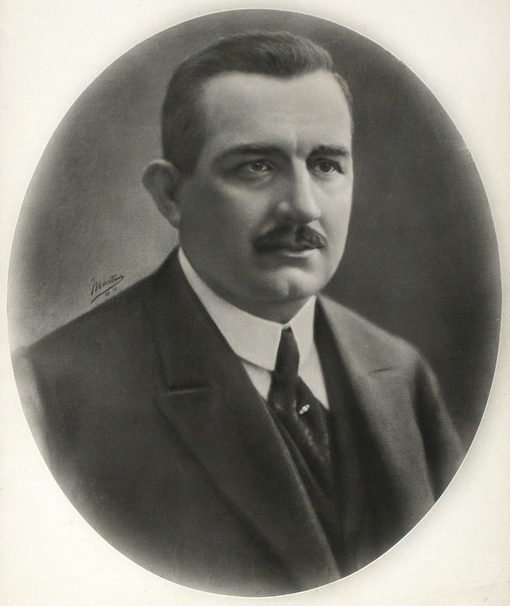

Texto do arquivo fornecido ao museu, com a redação original e a apresentação adaptada à tela. Dados, contatos, cargos e datas de eventos pertencem ao período do documento e não constituem informações atuais. As afirmações do texto são registros da fonte original.

DELFIM MOREIRA DA COSTA RIBEIRO
10º. PRESIDENTE DO BRASIL
MANDATO
15 DE NOVEMBRO DE 1918 A
28 DE JULHO DE 1919
Delfim Moreira da Costa Ribeiro nasceu em 7 de novembro de 1868 no município de Cristina, em Minas Gerais e estudou no seminário de Mariana. Pertenceu à geração dos republicanos históricos mineiros, formados em 1890 na faculdade de Direito de São Paulo. Começou a carreira como promotor público nas cidades mineiras de Santa Rita do Sapucaí e Pouso Alegre. Ingressou na política como vereador e, em seguida, foi eleito deputado estadual de 1894 a 1902, sendo nomeado secretário do interior de Minas Gerais. Delfim Moreira também foi presidente do Estado de Minas Gerais, de 1914 a 1918. Eleito vice-presidente da República para o mandato de 1918 a 1922, chegou à presidência em novembro de 1918 no lugar do titular Rodrigues Alves, que morreu vítima da gripe espanhola.Delfim Moreira faleceu em 01 de julho de 1920 aos 51 anos de idade na cidade mineira de Santa Rita do Sapucaí.
Em 17 de dezembro de 1938 através do Decreto-Lei 148 emitido pelo Governador do Estado de Minas Gerais, DRº Benedicto Valadares Ribeiro, o subdistrito de Soledade de Itajubá foi emancipado. Em homenagem ao político sul mineiro o novo município recebeu o nome de Delfim Moreira.